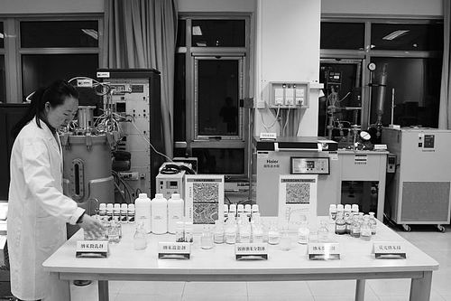

纳米农药“一点到位”

纳米农药将有利于实现传统化学农药的提质增效与节量、减排，振兴绿色农药产业 环发所供图从事纳米技术研究的学者很少关注农业，开展农业应用研究的专家也很少钻研纳米技术，这一现象近年来正逐渐改观。
11月17日—18日，第一届纳米科技与农业可持续发展国际会议在北京召开。记者从会上获悉，中国农业科学院成功开发了一批高效安全的杀虫剂、杀菌剂、除草剂等纳米农药新剂型，引起了国内外与会代表的高度关注。
研究结果显示，纳米农药制剂可显著地增强药效功能、延长持效期、提高生物利用度、杜绝有害溶剂与助剂，从而大幅度节约施药剂量，降低农产品残留和环境污染。
据悉，中国农科院于2014年启动了国家纳米农业领域的第一个“973”计划项目“利用纳米材料与技术提高农药有效性与安全性的基础研究”，目前正致力于产业化开发和应用推广研究。
“纳米农药的全面推广应用，将有利于实现传统化学农药的提质增效与节量、减排，振兴绿色农药产业。”上述“973”项目首席科学家、中国农科院农业环境与可持续发展研究所（以下简称环发所）研究员崔海信告诉《中国科学报》记者。
“说神秘也神秘，说简单也简单”
喝鸡汤与吃鸡肉，哪个更容易吸收？这个问题的答案毋庸置疑，崔海信向记者解释道，鸡汤里就含有纳米物质，为增鲜使用的调味料里也有纳米物质。此外，馒头、牛奶、饮料等食品都含有纳米物质。
据介绍，纳米是一个长度单位，即10-9米，纳米科技是在0.1~100纳米尺度空间内，研究物质属性和制造精密材料和机器的科学。纳米技术与信息技术、生物技术一同构成了现代科技前沿的三大主导学科。
记者在会上获知，纳米技术是在纳米尺度范围内研究材料的性质和应用的一种技术，主要包括纳米尺度物质的制备、复合、加工、组装、测试与表征，实现纳米材料在原子、分子尺度上的可控制备，并为其应用奠定基础。纳米技术发展迅速，已经渗透到化工、医药、能源、材料和生命科学等各个领域，给人们的生活带来极其深远的影响。
“提到纳米技术，说神秘也神秘，说简单也简单。”崔海信表示，纳米科技与传统农业产业结合，正在推动传统农业在许多交叉领域不断孕育新的重大突破，形成了新兴高端农业技术体系的生长点。
当前，纳米科技在农业上的集成应用呈现多点突破之势，其中之一便是利用纳米材料的靶向传输与控释功能，改善化肥、农药、兽药以及饲料等农业投入品的有效利用率，降低残留与污染。
记者在采访中了解到，中国农科院在国内率先开展纳米科技与农业科学的交叉研究。2014年中国农科院启动了国家纳米农业领域第一个“973”计划项目“利用纳米材料与技术提高农药有效性与安全性的基础研究”。
负责上述项目的是环发所农业纳米创新团队，他们围绕着利用纳米技术提高农药有效利用率和降低残留污染等国家重大科技需求，系统地开展了前瞻性、基础性与应用性的多学科交叉与协同创新研究，在纳米农药的研制理论与技术创新方面取得了重要突破。
目前该团队已建立了具有自主知识产权的难溶性农药水基化纳米乳制备技术、长效纳米微囊制备技术、缓释纳米微球制备技术、纳米混悬技术等农药纳米化核心技术平台，相关技术已获得国家授权发明专利。
提质增效，节量减排
我国是全球农药生产和使用大国，每年农药化学防治面积高达70亿亩次，使用量超过200万吨。经过多年的发展，我国已形成了较为完整的农药产业体系，为农业的持续稳定增产起到了保驾护航作用。
“但农药大多数为难溶性化合物，通常必须添加载体、溶剂、助剂等进行剂型加工，才能兑水稀释后喷洒使用。”中国农科院环发所研究员曾章华告诉《中国科学报》记者。
据介绍，由于载药粒子粗大和分散性差，传统农药剂型在田间喷施过程中，因药滴滚落、粉尘飘移、雨水冲刷等造成的药剂流失高达70%以上。
此外，农药的长期大量与低效施用，致使我国许多地区的粮食、蔬菜、水果，以及土壤、水体中的农药残留严重超标，不仅对生物及人体健康构成了严重威胁，也导致了生态系统结构和功能的破坏。
崔海信向记者介绍，利用纳米技术将农药粒子从传统的5微米降低至100纳米，农药的功效会得到充分发挥。
一方面，发挥纳米载药粒子的小尺寸与大比表面效应，增大作物叶面和有害生物表面的黏附性与覆盖率，进一步通过纳米载体的表面基团修饰增加农药液滴的叶面亲和能力，克服疏水性叶面的农药沉积障碍，减少叶面农药脱落，提高生物利用度。
另一方面，利用纳米材料负载农药粒子，拟合作物防治需求曲线，实现药物的控制释放，减少农药施用次数，从而避免了农药滥用引发的食品安全问题。
除了通过提高农药有效利用率，减少农药使用量之外，通过纳米化提高难溶性农药粒子的分散性和溶出速率，还可以大大减少农药制剂成分中的有机溶剂使用量，从而减少有害溶剂与助剂流入环境造成污染。
目前，上述纳米农药新剂型分别在华北、西北、华东、华中、华南等农业主产区，选择典型作物与防治对象，开展田间药效试验。
重农药源头创新 促“双减行动”
事实上，纳米材料因其尺寸小、结构特殊，而具有许多新的理化特性，如小尺寸效应、大比表面积、高反应活性、量子效应等。这些特性使纳米科技给各个领域带来革命性的变化，各种纳米材料在医药、电子、化妆品中广泛使用。
然而，在造福人类的同时，纳米材料也可能会给环境和人体健康带来影响。“由于目前纳米材料的安全性评价体系尚不完善，因此，将纳米材料与技术应用于农业时，必须重视相应的毒理学、安全性研究，引导农业纳米技术健康发展。”崔海信说。
据了解，农药的发展趋势是水基化和溶剂无害化。目前乳油、微乳剂等传统农药剂型中大量使用的苯类、醇类和酮类等极性溶剂，具有较高的急性毒性，并且容易渗透到农田和地下水中，分离和消除难度高，对环境和食品安全具有一定的威胁。此外，现有农药剂型的表面活性剂使用量大，在成本上优势也不明显。
在曾章华看来，减少有机溶剂和助剂的剂量，或选择环境降解性好、成本低的有机溶剂和助剂，是完善纳米农药的一个途径。
此外，纳米农药制剂颗粒小，比表面积大，表面能高，容易发生团聚、分层、沉降等现象，进而影响纳米农药制剂的综合性能。专家认为，提高水基化纳米农药储存的稳定性也是日后的研究热点之一。
“相比于国外，我国农药残留的社会压力比较大。在过去，多是强调如何使用农药、化肥等产品，但如果农药制剂质量不好，效果也有限。”崔海信表示，今后要通过农药源头创新，促进化肥农药“双减行动”。
2015年，农业部制定出台了《农业部关于打好农业面源污染防治攻坚战的实施意见》，提出“确保到2020年实现‘一控两减三基本’的目标，有效保障我国粮食供给安全、农产品质量安全和农业环境特别是产地环境的安全”。其中“两减”就是指化肥、农药减量使用。
农业部科教司副司长汪学军表示，后期将积极支持农业纳米科技研发，加速发展高效、安全的新型绿色农业化学品，促进农业资源高效利用，从源头上控制农产品中的化学品残留，推动绿色农产品生产，提高食品安全性。
就目前状况而言，崔海信认为，应加大科技投入，深入开展纳米材料与技术的农业应用机理研究工作，紧密结合农业生产实际，面向市场需求，探索合理的产学研模式，加速研究成果的产业化，是推进纳米农业技术研究的有效途径。